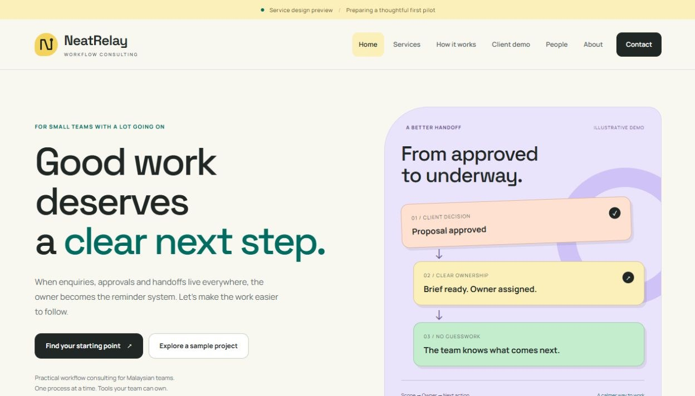
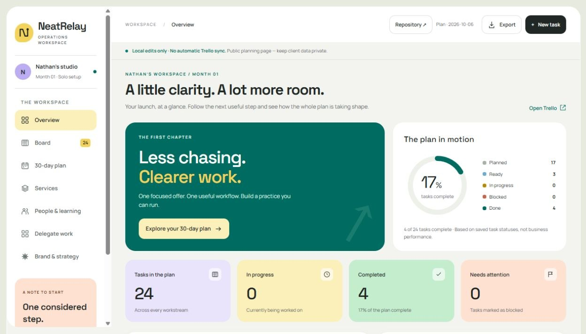
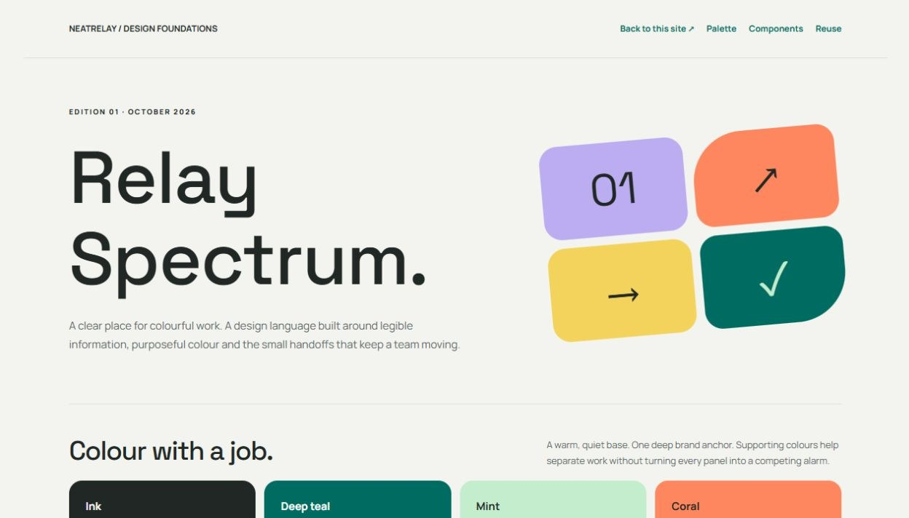

The idea
Good work deserves a clear next step
In many small teams, enquiries arrive on WhatsApp, approvals sit in email, numbers live in five spreadsheets, and nobody's sure who does what next. The owner ends up chasing everyone.
NeatRelay fixes one process at a time: map how work actually flows, then set up the smallest system the team can run themselves — a dashboard that shows the numbers that matter, a board that shows who owns what, and simple reminders so nothing slips.

Where it is
Honest status: early, and building in public
NeatRelay has no paying clients yet. Here's exactly how far it has got:
Positioning, three service shapes, proposal and onboarding templates.
A service site with a sample client walkthrough, and a planning workspace.
Building a demo studio workflow on fictional data, end to end.
One small, real project with a business willing to try it.

The new look
Relay Spectrum: colour with a job
NeatRelay now has its own design language, shared by the service site and the workspace. The idea is clear work, with a little energy: a warm, quiet canvas; purposeful blocks of colour; dark rounded type; and connected handoff shapes that show what the business actually does — a decision becoming someone’s next step.
- Every colour has a meaning: teal for the brand and progress, mint for done, butter yellow for in progress and focus, coral for attention, lilac for planning, sky for ready.
- Space Grotesk headings and Manrope text, stored with the site so it loads without outside requests.
- The progress dial uses only real saved task counts — no invented activity or revenue charts.
- Checked at desktop, tablet and phone widths across all 14 pages, with key colour pairs at 4.5:1 contrast or better.

Work with me
I'm happy to take on work now
Because NeatRelay is early, I'm actively looking for first projects — and I'm glad to start small. I can help if you need:
- A dashboard built: sales, ad spend, campaign or operations numbers pulled into one Google Sheets or Looker Studio view, with a short guide on how to read it.
- An existing dashboard improved: I'll work on dashboards other people built — clean up the data, fix broken formulas, add the metrics that are missing, or make it readable for the people who use it.
- Operations linked up: enquiry forms, task boards, spreadsheets and reminders connected so work moves from one step to the next without someone chasing it.
- A process written down: a clear map and checklist of how a job gets done, so it can be handed to someone new.
Tell me what's messy.
Send a short note about your team, the tools you use and what keeps slipping. I'll reply with how I'd approach it and what a small first step could look like.